Building a timber ship the size of Noah's Ark would require lifting heavy loads. But rather than casting doubt on the story, ancient civilizations show a level of construction technology that has only recently been surpassed. This is the sort of prowess one would expect from Noah's descendents.
Noah's Ark was a large construction project. While none of the timbers were likely to top the mass of the Egyptian obelisk now standing in the Vatican, Noah must have used something to raise loads. Shifting large keel logs into position, raising structural timber frames and handling long lengths of planking all require some sort of lifting apparatus. Since rope, wooden pulleys and lifting frames are all "low tech" ancient technologies, there is no lifting operation that is technically inconceivable as far as lumps of wood are concerned.
The ancient Egyptians, Greeks, Romans, Chinese, Mayans and others were all fascinated with lifting heavy objects, usually stone. Theories abound on how the Egyptians accomplished it. Even as recently as 1586, simply lifting an Egyptian stone obelisk was considered an engineering feat. That's strange.
The Obelisk of St Peter's Square. (Vatican) 25 meters (83 feet) tall and 326 tonnes (360 tons)
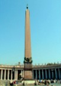
The Egyptians cut and polished the thing, floated it down the Nile and erected it without a fuss. The stone is exceptionally hard (red granite - [3] ). It stood for a millennium or more until the Romans arrived. Emperor Augustus liked it so he took it to the Julian Forum of Alexandria, where it stood until 37AD. That's no trivial transport operation. Caligula then ordered the forum demolished and the obelisk transferred to Rome, to place it in the center of the Neron Circus, on the foot of Vatican Mount. That's not a bad effort either. When Rome fell, so did the obelisk. It lay there for half it's lifetime waiting for civilization and technology to 're-evolve'. Finally in 1586 Pope Sixtus V asked architect and engineer Domenico Fontana to organise shifting the rock a quarter of a mile and standing it upright. And legends were born - so it seems [2]. It stands there today, still in one 360 ton piece.|
Plan view of the Vatican Obelisk erection |
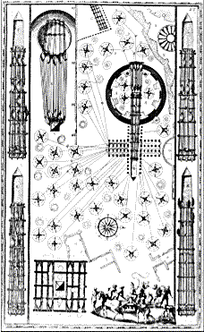 |
For some reason long periods of time seem to overawe the mind, especially the mind yoked to the alleged evolutionary progress of primitive man. Speculations abound. The Egyptians are reported to have used mountains of sand, huge kites [1], magic levitation, little green men or some other extraordinary method of erecting obelisks. Why not just lift them? Obviously that's what the Romans did. But that makes Rome not much different to ancient Egypt, which doesn't make a good story and it spoils the plot. We are supposed to have developed little by little from a bunch of grunting cave men, and ancient Egypt is not supposed to be smarter than Renaissance Italy.
Since so little is known about how the Egyptians lifted big things, we will look more closely at Fontana's obelisk operation.
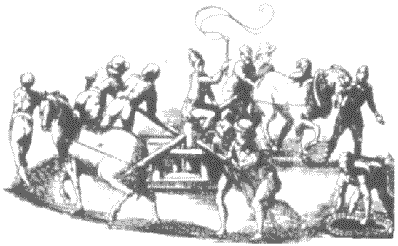
A winch, the excess rope being coiled to the side, combines human and animal power. Each horse should pull at least 300 kgf, the men perhaps 40, giving around 840 kgf according to the picture. (2 horses, 6 men). The velocity ratio would be at least 10:1, so allowing for 25% friction each winch could exert around 6 tonnes and would need to be firmly set into the ground.
Fontana's illustration (top) shows 34 such winches, symbolized as;
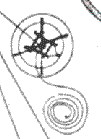
A substantial wooden framework was used in order to apply near-vertical forces to lift the load and tilt it upright.
.
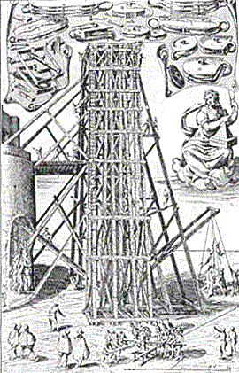
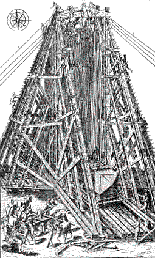
Comparing with today, a 445 tonne obelisk could be lifted with a crane like the one shown below. Mobile cranes don't come much bigger than this, anything larger is usually shipped in pieces and assembled on site.
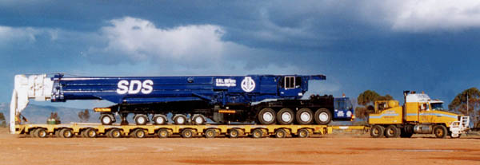
As big as they get. A 500 tonne mobile crane http://www.sdscorp.com.au/crane.html
Archimedes claw (lifting and destroying invading ships) https://www.cs.drexel.edu/~crorres/Archimedes/Claw/illustrations.html
See Cranes (geranos) in Ancient Greek Inventions. (Michael Lahanas) http://www.mlahanas.de/Greeks/Inventions.htm
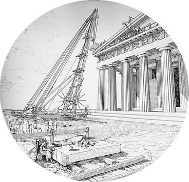
Working on the Parthenon. From Pentelicon to the Parthenon, Manalis Korres, Athens 1995
There are several advantages of the turnstile winch over the use of sheaves,
Substantial frameworks are likely to be used for construction of Noah's Ark, along with an assortment of cranes for lifting timbers. A crane (or several) specifically for lifting planks and holding them in place while they are attached is important, although the load is quite small.
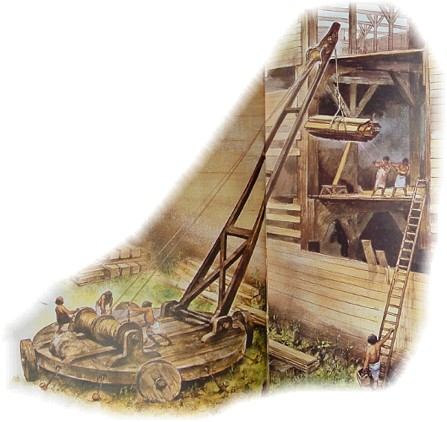
(Above) A crane by Rien Poortvliet in Noah's Ark. Harry N. Abrams, Inc. Publishers
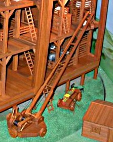
(Above) A similar crane by Rod Walsh (Noah's Ark modeler)
Wally Wallington 4 of Michigan started building his own Stonehenge in 2003.
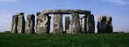
Wally demonstrates a method of raising a 10 ton block by himself - by pivoting and jacking them bit by bit. This incredibly simple technique requires no crane or pulleys and very little manpower (1 man). University of Michigan physics professor Michael Bretz agrees that the effort is pretty impressive. While he notes that no one can prove how Stonehenge was built, “it seems entirely plausible that ancient blocks could have been moved via his rock pivot and rocking/rotating technique.”
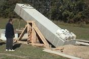
Watch the video at Bore Me here or You Tube here.
1. Unconventional ideas on Egyptian lifting methods. National Geographic. Researchers Lift Obelisk With Kite to Test Theory on Ancient Pyramids. Robert Tindol, Caltech, July 6, 2001 http://news.nationalgeographic.com/news/2001/06/0628_caltechobelisk.html. Actually, the whole system is similar to Fontana's but uses a kite instead of animal power. The kite only works because there is a high enough velocity ratio through the pulley system, which means a very, very long rope. Why not just pull on a rope? Silly. (They mentioned trouble with a variable wind.) Return to text
2. A Forest of Obelisks. Egyptian Obelisks, Roman conquest and Renaissance engineers http://www.saudiaramcoworld.com/issue/197902/a.forest.of.obelisks.htm Return to text
3. Raising a small obelisk today in Caesarea. Still no easy task as 20 engineers use a modern crane to re-assemble a 'small' 100 ton obelisk. They appeared to have trouble re-assembling the 50 ton pieces of the broken granite obelisk using dowels and epoxy. http://www.eretz.com/internet/obelisk1.htm Return to text
4. Wally Wallington: Forgotten Technology. http://www.theforgottentechnology.com/ Return to text